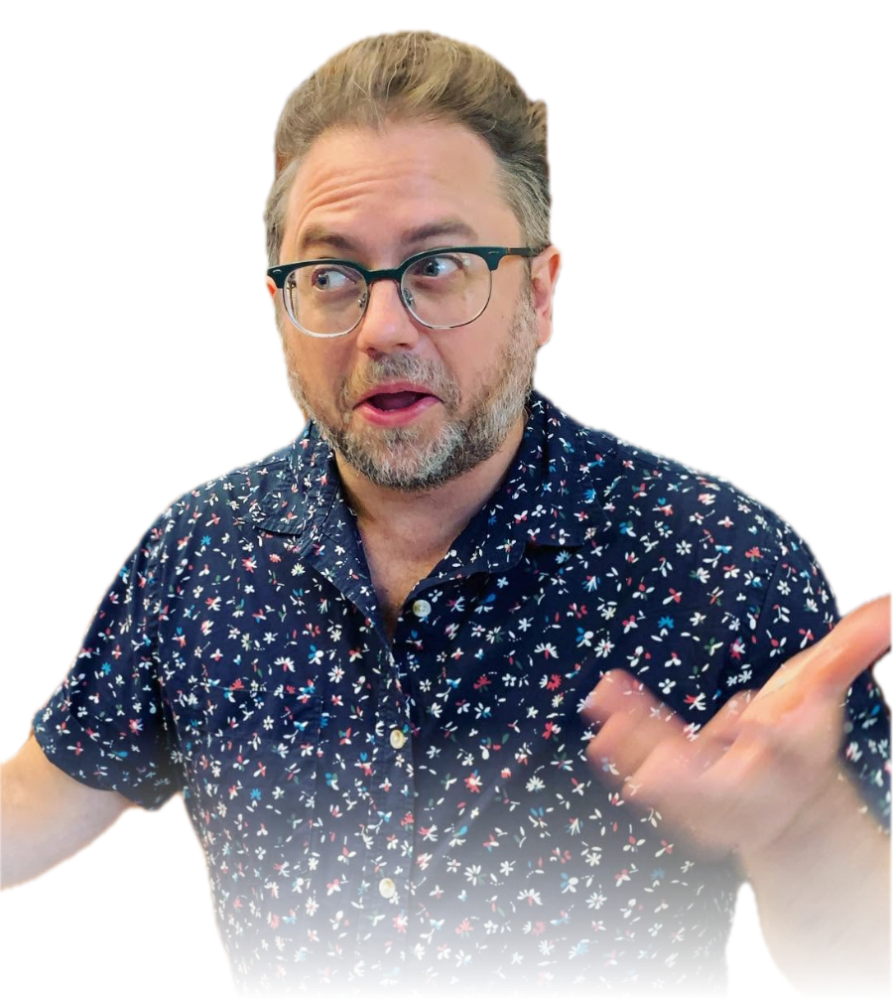
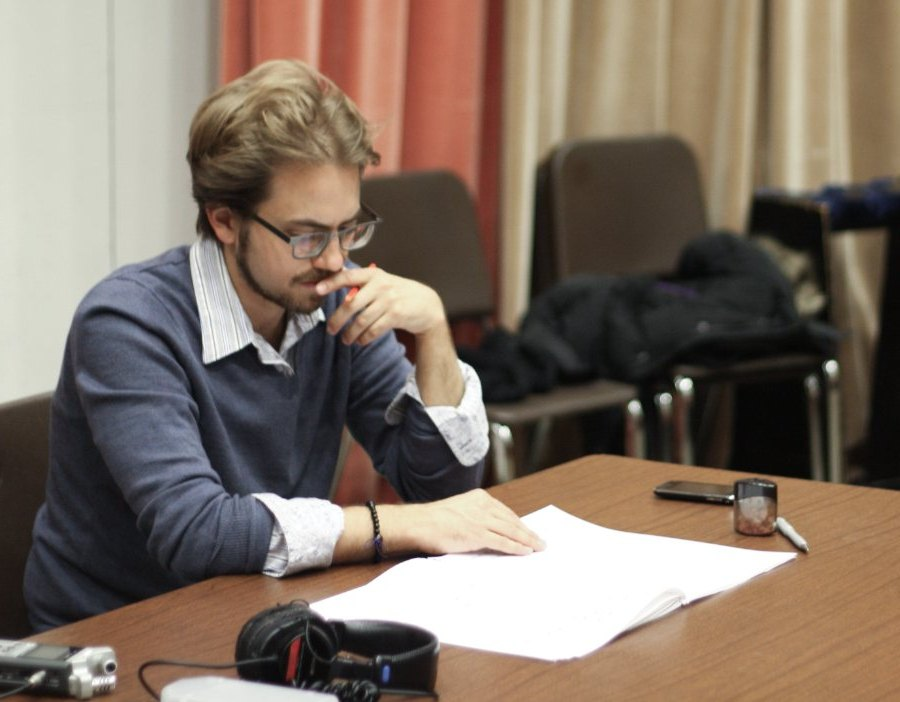

Meet the Designer
My twin passions are education and creative collaboration.

As an Educator
- 20 years, 6 universities, 1,200+ students
- 13 courses built from scratch
- 500+ private students, tailor-made lessons for each of them
- Alignment: all materials driven by learning objectives
- Assessments test deep engagement, not just memorization: analytical writing and creative projects, rather than exams
- Translating complex theoretical material into digestible, engaging learning, especially for learners who come to the material skeptical
- Strong public-facing communication skills, which carry into instructional design, learning facilitation, and AI prompting
- Appreciation for gray areas: real knowledge production often involves addressing multiple conflicting ideas at once
- Accessibility and LMS Management: eight courses moved fully online during the pandemic, plus five more taught as hybrids; recorded and captioned video lectures, tracked engagement analytics, and authored quizzes and discussion boards in Canvas and D2L Brightspace
As a Creator

- 25 years as a composer, arranger, songwriter, and sound designer
- 33 contemporary classical pieces composed, many on commission, across a variety of instrumentations
- 30 plays (music and/or sound design), 3 film scores, 2 albums (orchestral arrangements)
- Constant adaptation to new technology: engraving software, digital audio workstations, synthesizers, and much more.
- Big picture: envisioning the structure of an entire piece before any note is written, crafting flow from section to section that is both logical and engaging
- Micro-decisions: thousands of details, each decided to work in the moment and align with the piece’s aesthetic goals, just as every aspect of my learning modules aligns with their learning objectives
As a Business Professional
- 350 students whose curricula I oversaw as Director of Undergraduate Studies
- 27 individualized graduate-level music theory comprehensive exams devised and and conducted
- 9 aspiring professionals mentored through capstone projects, recitals, and career applications
- 8 large multimedia projects created in collaboration with other artists
- Project management: every commissioned piece is a project with stakeholders whose needs I have to meet, including delivering finished work on time and to spec
- Creative collaboration: my favorite part of any design project; I’ve worked with dozens of visual artists, choreographers, dancers, theatre artists, filmmakers, and other creative professionals. I love being part of a team working toward the same goal
- Leadership: besides my role as Director of Undergraduate Studies, I also reported assessment data from five course sections and audited curricula against career-readiness competencies as one of four GSU College of the Arts fellows on the university’s Quality Enhancement Plan
Skills and Tools
Design
Needs analysis · learning objectives · curriculum and course design · rubric and assessment design · rules-based scoring · storyboarding · program assessment and reporting · accessibility (Section 508, WCAG 2.1 AA)
Tools
Rise 360 · Microsoft 365 (PowerPoint, advanced; Teams; SharePoint) · Canvas · D2L Brightspace · Figma · Pro Tools · Final Cut Pro · DaVinci Resolve · AI-assisted build and drafting (Claude, ChatGPT, Gemini)